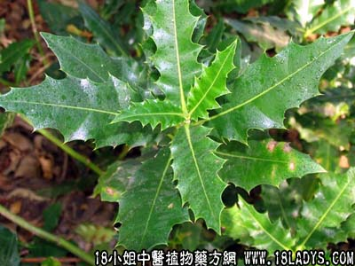

别名：软骨牡丹。
植物名：老鼠簕。
生长环境：本品为小灌木，生长于潮汐能至的沿海一带的污泥上，河的出口或河岸、涌边、基圃上。
分布：广东和福建南部沿海地区，珠江三角洲附近的河边；果园的水沟、小涌的边均有生长。
入药部分：根。
采集期：全年。
自采地点：涌边。
性味：性凉、味微苦。
功能：除痰火、消瘰疬、散结核、止咳、止血。
主治、用量和用法：1、咳嗽：干根1至2两，加猪瘦肉适量，清水煎服；2、瘰疬：用法同上；3、白浊：用法同上。
验方：（治瘰疬方）水老鼠簕1两、风栗壳5钱、五爪龙根5钱、白花灯笼根5钱、清水四碗，煎成一碗服。
（方解）水老鼠簕除痰火、消瘰疬，一味单方，已生著效；风栗壳、五爪龙、白花灯笼根亦带用以治痰火结核者，合而为方，治效更佳。
（方歌）瘰疬每因痰火生，水老鼠簕灯笼根，五爪龙根风栗壳，火散痰除效堪珍。
按：民间草药有名“山老鼠簕”者，味先甜后苦，产于山上，功用不同，亦能化气散瘀。